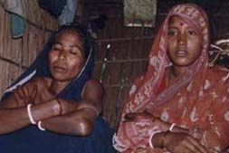
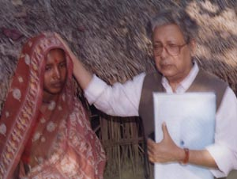
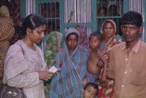
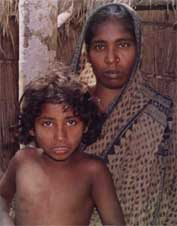
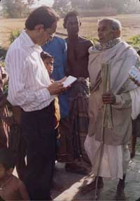
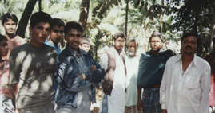
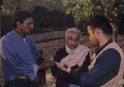

|
|
|
|
|
|
|
|
|
|
|
|
|
|||
|
|
||||
|
|
Trip To Bhola: Annada Prasad Cries in Silence & Anguish
Story of Daughter in Law & Mother in Law We then moved to Luxmi's cottage. Luxmi Das, aged about
40 years, wife of Sudarsan Das is yet another unfortunate victim of gang rape.
Ramani and Luxmi both are day laborer (Kamla) having a son and daughter in
law. Our female team-member talked to them inside a room. A terrible inhuman
story of sexual violence was unfolded. According Luxmi both she, and her 16
year old and 4-5 month conceived daughter in law were subjected to gang rape
by at least 7 hooligans. As
they heard that there might be some trouble following election the couple with
their son and daughter in law took shelter at the House Complex of Tarani
Kanti Das in the evening of 1st October. At about 4 a.m., 2nd October, the
complex was under attack by an armed group consisting of 20-25. According to
Luxmi what happened next, let us hear from her own language, ".... They then
grabbed both of us - me and my daughter in law, and forcibly dragged to a near
by deserted house. Later on we learnt that the house belongs the ex-union
chairman, a local AL leader, Abdul Kader, who himself fled away for fear of
repression by their anti party supporters. The seven gangsters dragged my
daughter in law in the kitchen and looted her nakfu, and then they did the
same thing to me. We begged to them not to loot our honour (izzat) on the
ground that I am an old woman and my daughter in law is carrying for 3-4
months. The demons did not listen to us. " Her daughter in law became so week after this gang rape that she had to help her walking after two hours. They were not only robbed of their highest and purest honour, their small material belongings were also looted e.g. ducks 14, hens 2 with a dozen of eggs, dried chilies, rice (4 mond), utensils and clothing from their house. Both Luxmi and her daughter in law were treated in Lalmohan health complex. A case was filed in the name of daughter in law at Lamoham Ps on 16. 11. 01 under an act of women and children repression. We learnt that two accused were arrested. Story of Vendor Bari Vendor Bari: A Place of horror & Agony. (see map). A very reputed house complex in this locality. The complex is also known as Mistry Bari. 20-25 families live in here forming a cluster of families.  This cluster is known as Vendor. A few generation back head of a family was a Vendor doing registration work involved in buying-selling deeds in a register office at Lalmohan thana. Since the his house is to be called as Vandarer Bar (Vendor ' House). Now the entire complex is known by that name. Photo: Learned professor of our team solacing the
wretched girl Susmita. Photo: Our learned Professor talking to Head of
the , now famous Vendar bari complex. Story of Vendor Bari Continued
 One elderly women told our learned professor that a married woman named Chhaya was first gang raped at Vendor Bari in the dark night. On the following morning she came back to her own home thinking worst is over. But alas the goondas attacked her again on following morning at about 10 a.m. (3rd October). She jumped into a pond for safety. But the hooligans had better technique- as they grabbed the little child of Chhaya from inside a room and threatened to throw the baby into pond if she didn't surrender to their demand. The poor girl finding no alternative surrendered to their demand and lost her nakful (symbol of izzat) second time to a group of gangsters.  Another married girl, Anuradha wife of Krisna Kanta Das,
according to another elderly lady, was gang raped in the same night by a group
of unknown hooligans. She tried to defend her with a wooden stick (chala khat)
but being overpowered by the evil force she surrendered to her fate. Her
daughter in law, Trisna aged about 13-14 age was also subjected to sexual
violence under a shed of betel-leaf by a group of five monsters. An elderly gentleman told us that it is now difficult to
reside in this locality with honour and dignity. If grand old man Brojaraj,
Nagendra Babu, and men like Ganesh Kabiraj and Daktar Paban Babu, or school
teacher Shital Babu could be treated like dogs and cats than what is waiting
for common men is any body's guess. We are told many respected families either
left the village temporarily to near by safer places; some have taken shelter
in upazila sadar(s), some in Zila sadar. We are further informed that many
families have already left their homes permanently for West Bengal. Many
families are waiting for opportune time to leave the country. In all three
case instances are many.
 For example,
according to the story prevailing in the village respected Ganesh Babu left
the village as female members of his family were sexually tortured about a
week before the election. A general sense of insecurity, a sense of panic, a sense
of uneasiness is still prevailing throughout the Annada Prasd and adjacent
villages. The villagers do not dare to send their children, sons or daughters
to school. One such student talked to us- who is student of class IX at Lord
Hardinge High School. He is not attending school for fear of repression.
Another such example is Alta Bala, daughter of Monoranjan Das, a student of
class V of GM Primary School who stopped going school since 2nd October. We
learnt that she has been sent to West Bengal recently for safety. The families
who are contemplating to leave the country after selling their lands and other
properties are also in a dilemma as the market price of land at Lord Hardinge
getting down rapidly. Usual price of land in this locality is ~ Tk. 80,000/
per Kani (two and half acre). Now it has come down to only Tk 20-25, 000/-.
 The sellers are not
certain even this money they will get after the deal is made. Our learned
professor talked to a group of young men, who as told by the villagers belong
to the gangsters; they said " not much had happened, the reporters made it
exaggerated. Now total peace is prevailing, Sir. " Their ring leaders Yasin
Master and Abul Kasem also were of the same opinion. When asked being an
influential & a good man, as you claimed, why didn't you take appropriate
action to protect the poor minorities? He gave answer with a characteristic
mischievous smile " Texan Quiche Ah Naito Sir, - Polapanera dui ekta ita
marchhe "Malign glare " [ Sir, nothing serious happened here; some boys threw
brick-bats, one or two to the houses of non Muslims (Malauns)." We came to know that 35 families are ready to leave the country with the arrangement of local brokers (dalas) very soon. The matter is quite well known. We learnt that already the family of Haralal Das with his wife and a daughter, Liton and his wife (son of Kamini Dhobi), Satyabati and her two daughters (her husband left a month ago) and many others have left the village for West Bengal in India. We later learnt that after our return from Annada Prasad the gangsters once again threatened the villagers if they say anything against them, they will be simply eliminated this time, - no body could save them. Momata's father was taken to the Lalmohan police station by the local BNP leaders and tried to induce him withdraw the case of rape. Fortunately the courageous Father did not yield to their pressure. But how long he can resist? A group Bedes, nomadic people used live on boat and move about from one village to another along the riverside, temporarily anchored at the Batai Canal, near Fatemabad sluice gate. When a group of Bede girls were moving around the village, we learnt that on 5th January, two goondas belonging to the group of gangsters, named Alamgeer (a ring leader & accused of almost all cases filed so far) and Nantu manged to isolate one young girl on some plea & took her to the quarter of one Tajel Bapari, father in law of Nantu. Then those two notorious young men stripped of the girl & molested her. She was however saved by the neighbors and recovered her naked. We note down as many names as we could who were sexually tortured from different elderly women. The general remark is that whether one admits or not now, it is difficult to find any young and mid-aged women who could save their nakfuls on that dreadful night of 2nd October. Only God knows with HIS omnipresence knowledge. The powerless GOD looked so helpless against a one hundred strong miscreants on that dreadful night of October 2..
 God fathers are more
powerful than God himself. What a pity! When the team was returning from 'Vendor Bari' it is already dark say about 6 p.m. many people were found to line up on both sides of the earthen road every one eager to talk to us hoping that these sympathetic 'Bara Sahibs' might do some thing good to them. Our learned Professor on his way tried to solace them and talking as many as possible as we were waiting for him on our microbus. One girl narrated her story in a whispering voice with tears in her eyes that two gangster looted her nakful (izzat i.e. honour). She was narrating her story to our elderly gray harried professor, as if a daughter is telling to her father the story of her loosing the greatest wealth. Her name is Golapi. I found her as pure as her name indicates. The crowd, Brajokumar babu, Nagen Babu, day laborer Sudha Mohan). a grand old lady of 104 years all repeatedly requested us to visit them again and again; they also appealed to us to take up the matter with the 'oparwalla' (not God) so that the local Police Substation (Phanri) be retained and police patrolling is strengthened. We left them to their fate knowing fully well how helpless they are, and so we are. On our way back we dropped at the Lalmohan Police Station at about 7-30 p.m. The duty officer, in the absence of O.C. gave the details of the progress of the cases and assured us that they were doing their best. He further assured us that the local police substation would remain there for indefinite period. On the next morning at about 11 a.m. we met the Deputy Commissioner (DC) and gave him a memorandum narrating our experience. We further asked him to initiate more cases on their own so that common people in the locality feel assured and revise their decision not to leave the county. The DC, a perfect gentleman, assured us with a smile. We left Bhola in the evening of 29th December after visiting some other affected areas in Uttar Dighaldee union under Bhola Sadar. The story is same, pattern is identical. One may legitimately ask is it a pre-planned scheme? Honestly speaking I don't know. Epilogue Our Bhola contact recently informed us (11th January) that after our return from Annada Prasad the gangsters once again threatened the villagers if they say anything against them any more to outsiders, they would be simply eliminated this time, - no body could save them. Momata's father was taken to the Lalmohan police station by the local BNP leaders and tried to induce him to withdraw the case of rape. Fortunately the courageous father did not yield to their pressure. But how long he can resist? A group of Bedes, nomadic people used live on boat and move about from one village to another along the riverside, temporarily anchored at the Batai Canal, near Fatemabad sluice gate. When a group of Bede girls were moving around the village, we learnt that on 5th January, two goondas belonging to the group of gangsters, named Alamgeer (a ring leader & accused of almost all cases filed so far) and Nantu managed to isolate one young girl on some plea & took her to the quarter of one Tajel Bapari, father in law of Nantu. Then those two notorious young men stripped of the girl & molested her. She was however saved by the neighbors and recovered her naked. There was an amicable settlement- the two goondas were fined Tk 1500/- for the offence they committed. There was no police case. The local administration did not take the matter seriously. In every notorious case the accused are set free- and they every time show thumb to the complainants and the police administration. They could continue their notorious anti-social & criminal offence unabated because of the political support they are receiving from the party in power. In the mean while the plight of minorities and weaker section of the society continues and "Vicharer Vani Nirabe Nivrite Kande ". ---------------------------- Dr. Ajoy K. Roy, Rtd. Professor of Physics, Dhaka University, Bangladesh; ardent activist of Human Rights.
|
|
||
|
|
|
|||